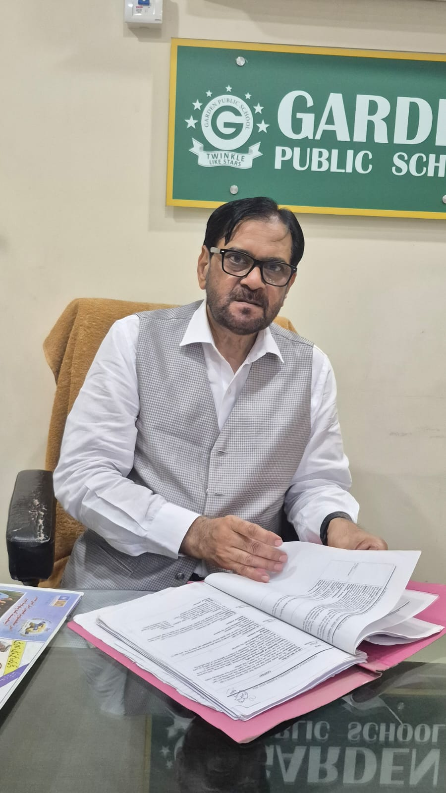
01 / SCHOOL LEADERSHIP
Principal
A steady, thoughtful presence at the heart of our school community.
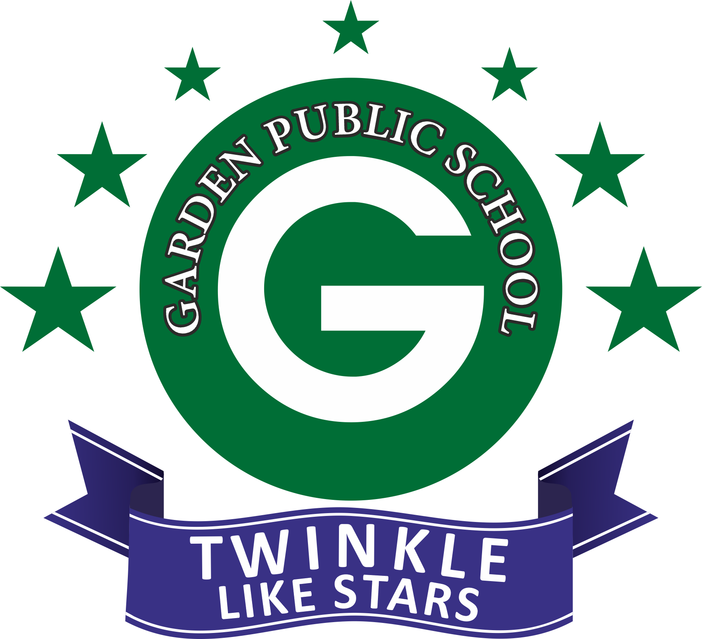
GardenPUBLIC SCHOOLSchool for curious minds
A joyful, thoughtful learning community where every child is known, encouraged and prepared to make a meaningful mark on the world.
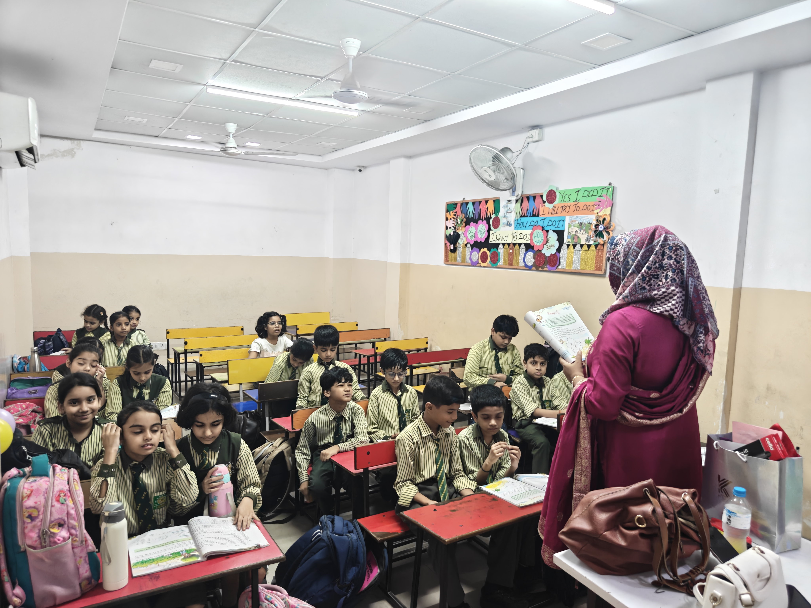
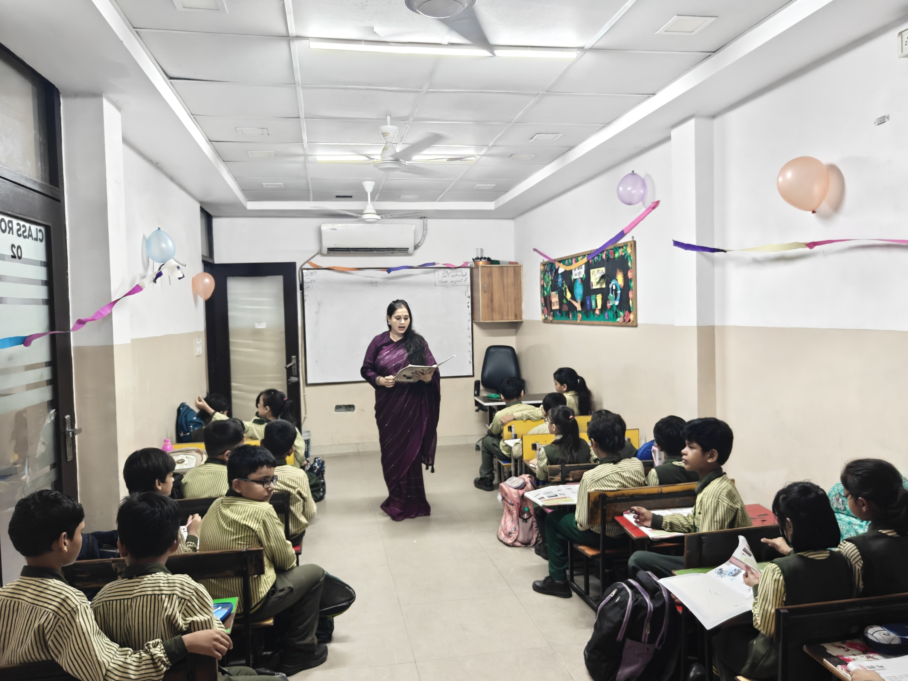
From classroom discoveries to shared celebrations, these are the everyday moments that make Garden feel like a community.
.jpeg)
.jpeg)

.jpeg)
.jpeg)
.jpeg)

.jpeg)
Admissions & enquiries
Tell us a little about your child and our team will get back to you about the right next step at Garden Public School.
Prefer a form? Download the admission form ↓At Garden Public School, we believe the best learning begins with a question, a brave attempt or an unexpected idea. Our classrooms are warm, ambitious spaces where children build knowledge — and the confidence to use it.
With experienced educators, a supportive community and a new approach to child education, we help young people become creative thinkers, compassionate friends and capable citizens.
Meet the people who help Garden stay ambitious, welcoming and rooted in what matters most: every child.

A steady, thoughtful presence at the heart of our school community.
Mr. Ihteshamuddin was born in 1965. After completing his Class XII education in Azamgarh, he came to Delhi to pursue his studies at Jamia Millia Islamia. He went on to complete postgraduate studies at the University of Delhi, followed by a second master's degree from Jamia Millia Islamia.
In 1993, he began teaching at East Coast English School in Sharjah, UAE. He served there until 1999, when he chose to return to India with a dream of building a school that could contribute to the betterment of the community.
Garden Public School was founded in 1999 by Mr. Ihteshamuddin, Mrs. Shagufta and Mr. Abdul Naseeb Khan — together turning that shared vision into a welcoming place for children to learn, grow and flourish.
Behind the scenes
Our administration team creates the calm, organised foundation that allows learning, connection and school life to flourish.
Connect with administration →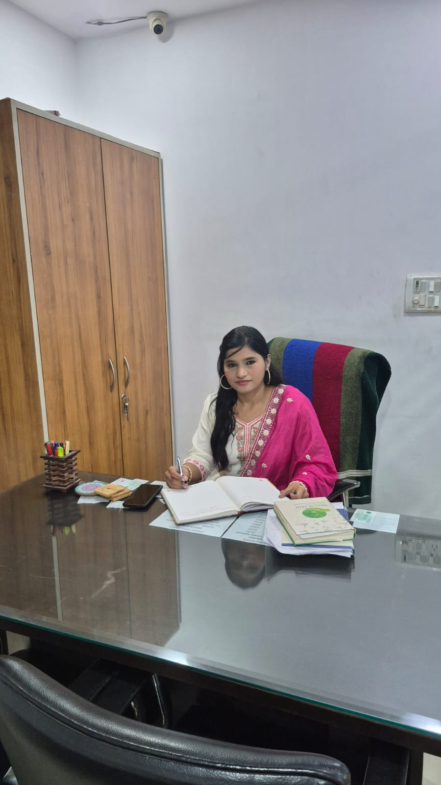
Keeping every detail moving smoothly so students and teachers can do their best work.
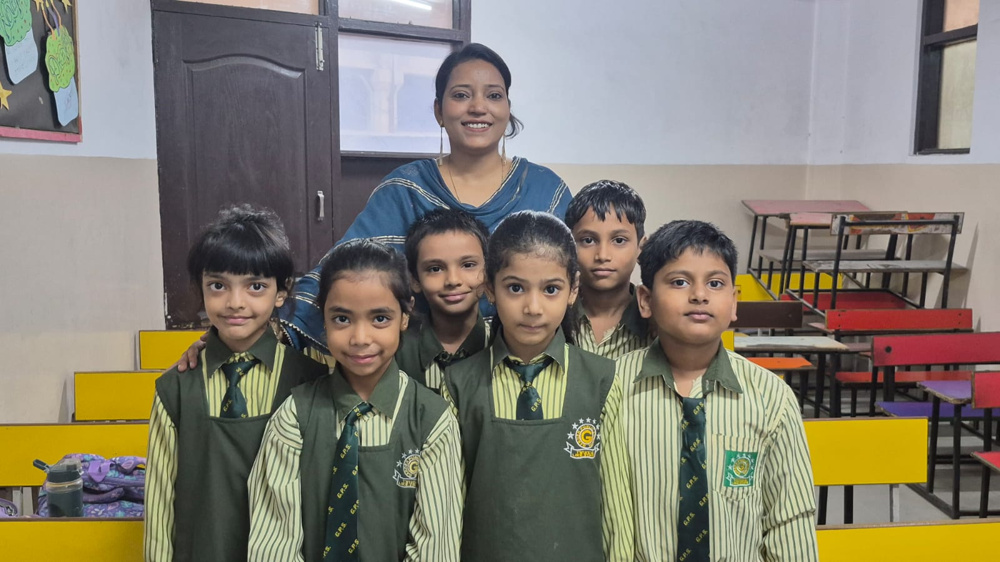
Counselling at Garden
Our counselling support gives children a safe, respectful space to talk, understand their feelings and build the confidence to navigate school and life.
Through patient guidance and meaningful conversations, we work alongside students and families to help every child feel heard, supported and ready to learn.
Talk to the school →We make space for the academic, the artistic, the active and the wonderfully unexpected.
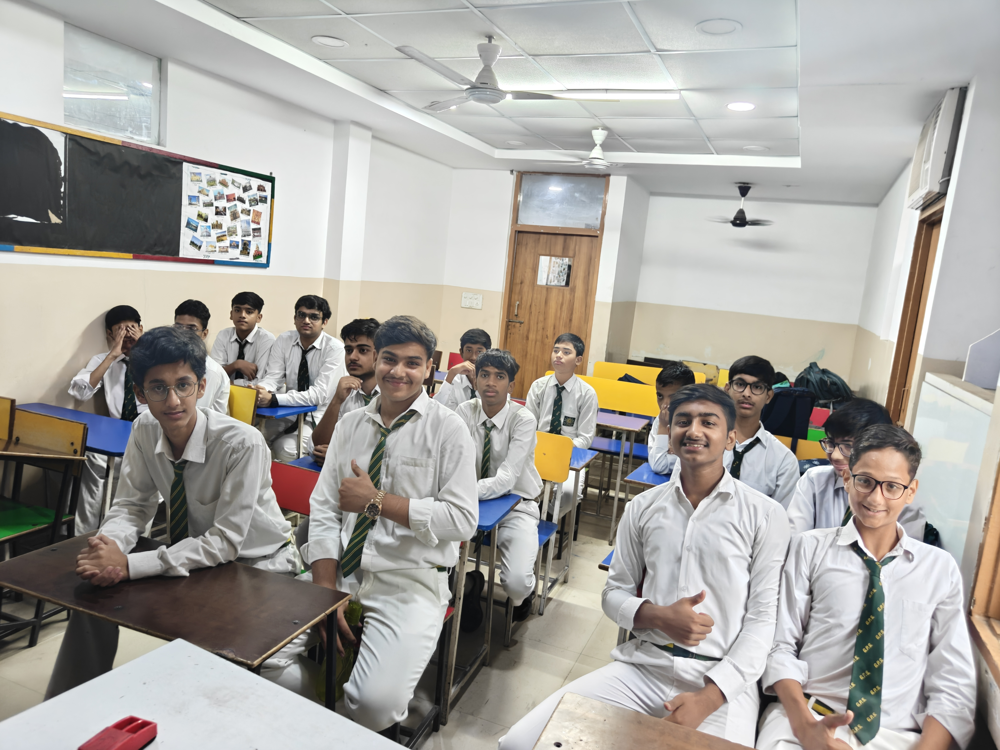
Art, music and making turn ideas into something real — building expression, patience and joy.
We encourage questions that do not have one easy answer.
↗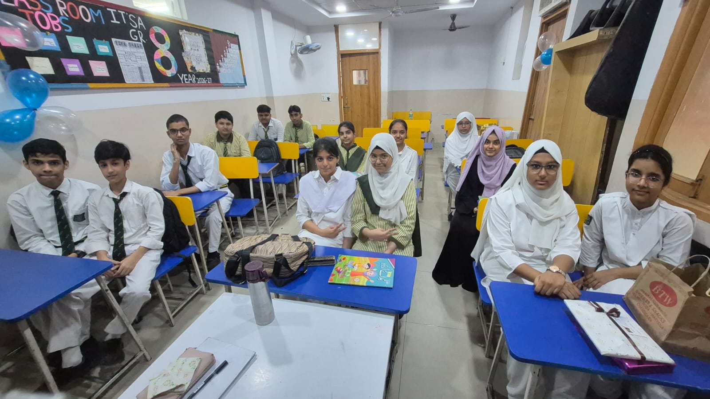
Every child gets the guidance and space to discover their own strengths.
↗School is not only what happens on the timetable. It is the conversation on the bus, the team cheer, the muddy experiment and the friend you make for life.
See school life ↗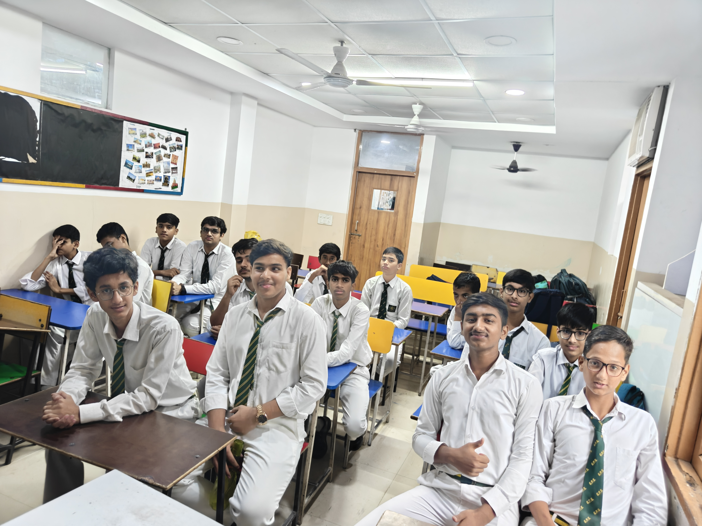
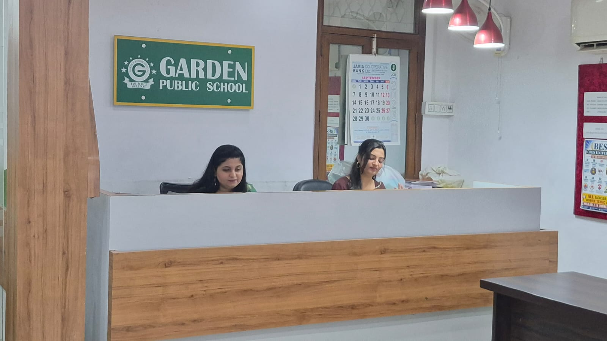
Our Kindergarten is a joyful first step into school — full of play, discovery, friendship and wonder.
Every day invites children to explore the world at their own pace, with caring adults close by to encourage every new question.
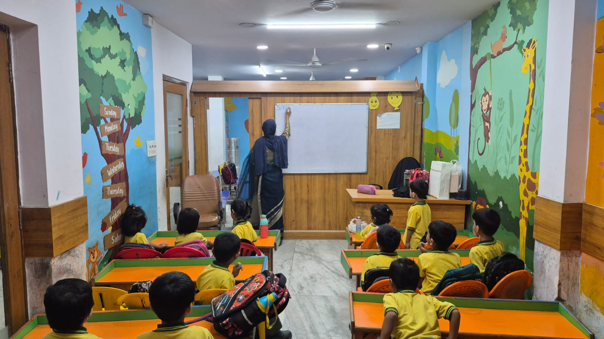
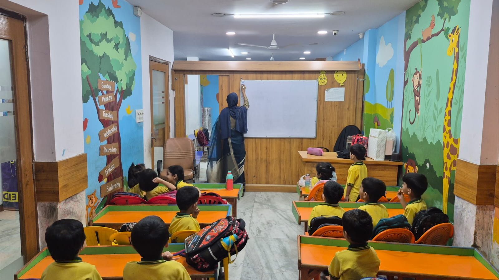
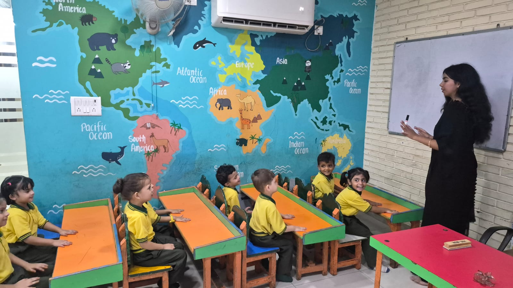
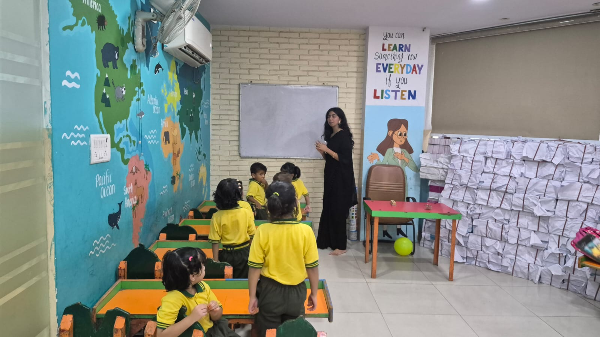